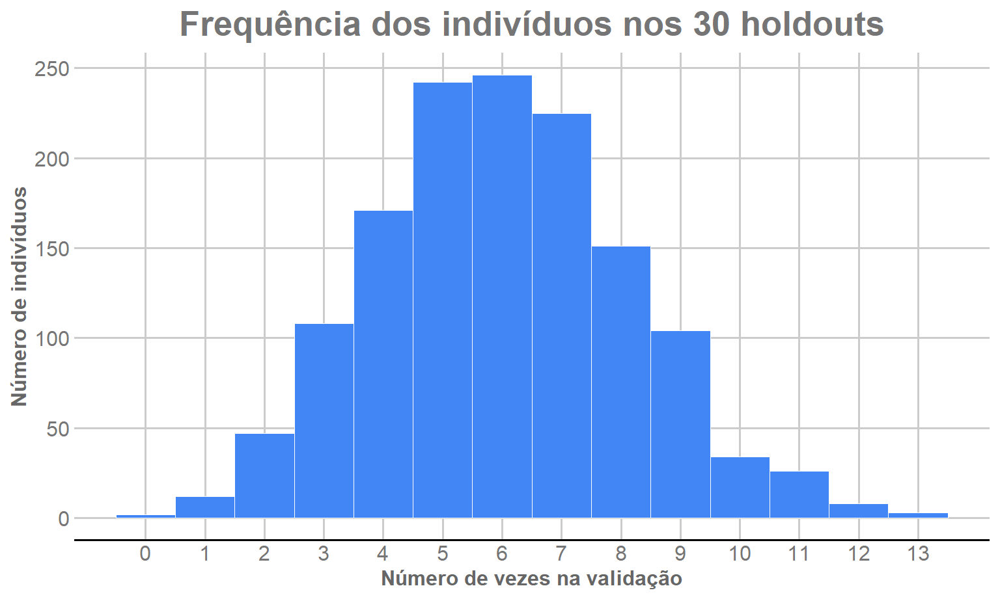

Last updated: 2026-08-11
Checks: 7 0
Knit directory:
genomic-prediction-data-augmentation/
This reproducible R Markdown analysis was created with workflowr (version 1.7.2). The Checks tab describes the reproducibility checks that were applied when the results were created. The Past versions tab lists the development history.
Great! Since the R Markdown file has been committed to the Git repository, you know the exact version of the code that produced these results.
Great job! The global environment was empty. Objects defined in the global environment can affect the analysis in your R Markdown file in unknown ways. For reproduciblity it’s best to always run the code in an empty environment.
The command set.seed(20260810) was run prior to running
the code in the R Markdown file. Setting a seed ensures that any results
that rely on randomness, e.g. subsampling or permutations, are
reproducible.
Great job! Recording the operating system, R version, and package versions is critical for reproducibility.
Nice! There were no cached chunks for this analysis, so you can be confident that you successfully produced the results during this run.
Great job! Using relative paths to the files within your workflowr project makes it easier to run your code on other machines.
Great! You are using Git for version control. Tracking code development and connecting the code version to the results is critical for reproducibility.
The results in this page were generated with repository version 8882e17. See the Past versions tab to see a history of the changes made to the R Markdown and HTML files.
Note that you need to be careful to ensure that all relevant files for
the analysis have been committed to Git prior to generating the results
(you can use wflow_publish or
wflow_git_commit). workflowr only checks the R Markdown
file, but you know if there are other scripts or data files that it
depends on. Below is the status of the Git repository when the results
were generated:
Ignored files:
Ignored: .Rproj.user/
Ignored: ETA_1_varU.dat
Ignored: data/dados_gblup.csv
Ignored: mu.dat
Ignored: output/01_data_objects.rds
Ignored: output/02_splits_mestre_30rep.rds
Ignored: output/03_genomic_objects.rds
Ignored: output/checkpoints/06_da_progress.csv
Ignored: output/figures/
Ignored: varE.dat
Note that any generated files, e.g. HTML, png, CSS, etc., are not included in this status report because it is ok for generated content to have uncommitted changes.
These are the previous versions of the repository in which changes were
made to the R Markdown (analysis/02_sampling_splits.Rmd)
and HTML (docs/02_sampling_splits.html) files. If you’ve
configured a remote Git repository (see ?wflow_git_remote),
click on the hyperlinks in the table below to view the files as they
were in that past version.
| File | Version | Author | Date | Message |
|---|---|---|---|---|
| Rmd | 2cbe537 | Weverton Gomes da Costa | 2026-08-11 | Standardize module 2 validation frequency figure |
| html | d32edc6 | WevertonGomesCosta | 2026-08-11 | Publish workflowr tutorial site |
| Rmd | adc8cb6 | Weverton Gomes da Costa | 2026-08-11 | Rewrite sampling module as nested-holdout tutorial |
| Rmd | 333423a | Weverton Gomes da Costa | 2026-08-10 | Add stage 2 sampling and splits |
Um modelo de predição precisa ser avaliado em indivíduos que não forneceram fenótipos durante o treinamento. Caso contrário, mediríamos principalmente a capacidade de reproduzir dados já observados.
Em cada repetição deste tutorial:
T100;Os conjuntos menores são aninhados:
\[ T_{25}\subset T_{50}\subset T_{75}\subset T_{100}. \]
Isso significa que os indivíduos usados em T25 também estão em T50, os de T50 estão em T75 e assim por diante. Dessa forma, aumentar o tamanho da amostra real corresponde realmente a adicionar indivíduos ao mesmo conjunto de referência.
Esta etapa reutiliza o objeto produzido no módulo anterior. Nenhuma auditoria do CSV é repetida aqui.
DATA_OBJECTS <- "output/01_data_objects.rds"
if (!file.exists(DATA_OBJECTS)) {
stop("Execute primeiro analysis/01_data_audit.Rmd.")
}
obj <- readRDS(DATA_OBJECTS)
n <- obj$n
n[1] 1379Utilizamos 30 repetições. A validação contém 20% da população e as sementes fixas tornam o sorteio reproduzível.
PROP_VALIDACAO <- 0.20
PROPORCOES_TREINO <- c(0.25, 0.50, 0.75, 1.00)
N_REP <- 30
SEEDS_REP <- 101 * seq_len(N_REP)
N_VALIDACAO <- round(n * PROP_VALIDACAO)
N_POOL <- n - N_VALIDACAO
c(
validacao = N_VALIDACAO,
T100 = N_POOL
)validacao T100
276 1103 Com 1.379 indivíduos, cada repetição contém:
\[ 1379 = 1103_{\text{treinamento}} + 276_{\text{validação}}. \]
Para cada repetição, primeiro sorteamos os 276 indivíduos de validação. Os 1.103 indivíduos restantes formam T100.
Em seguida, uma única permutação aleatória de T100 é criada. Os conjuntos T25, T50 e T75 são obtidos usando os primeiros indivíduos dessa mesma permutação, o que garante o aninhamento.
splits_mestre <- setNames(
lapply(
PROPORCOES_TREINO,
function(x) vector("list", N_REP)
),
as.character(PROPORCOES_TREINO)
)
for (rep in seq_len(N_REP)) {
set.seed(SEEDS_REP[rep])
validacao <- sort(
sample(
seq_len(n),
N_VALIDACAO,
replace = FALSE
)
)
pool <- setdiff(
seq_len(n),
validacao
)
ordem_pool <- sample(
pool,
length(pool),
replace = FALSE
)
tamanhos <- c(
floor(0.25 * length(pool)),
floor(0.50 * length(pool)),
floor(0.75 * length(pool)),
length(pool)
)
for (i in seq_along(PROPORCOES_TREINO)) {
proporcao <- PROPORCOES_TREINO[i]
treino <- sort(
ordem_pool[seq_len(tamanhos[i])]
)
splits_mestre[[as.character(proporcao)]][[rep]] <- list(
treino = treino,
valid = validacao,
pool = sort(pool),
seed = SEEDS_REP[rep]
)
}
}As verificações abaixo garantem que todas as repetições obedecem ao mesmo contrato experimental.
for (rep in seq_len(N_REP)) {
t25 <- splits_mestre[["0.25"]][[rep]]$treino
t50 <- splits_mestre[["0.5"]][[rep]]$treino
t75 <- splits_mestre[["0.75"]][[rep]]$treino
t100 <- splits_mestre[["1"]][[rep]]$treino
validacao <- splits_mestre[["1"]][[rep]]$valid
stopifnot(all(t25 %in% t50))
stopifnot(all(t50 %in% t75))
stopifnot(all(t75 %in% t100))
stopifnot(length(intersect(t100, validacao)) == 0)
stopifnot(length(t25) == 275)
stopifnot(length(t50) == 551)
stopifnot(length(t75) == 827)
stopifnot(length(t100) == 1103)
stopifnot(length(validacao) == 276)
}A tabela mostra os tamanhos de treinamento e validação. A validação é a mesma para T25, T50, T75 e T100 dentro de cada repetição.
resumo_splits <- data.frame()
for (rep in seq_len(N_REP)) {
for (proporcao in PROPORCOES_TREINO) {
s <- splits_mestre[[as.character(proporcao)]][[rep]]
resumo_splits <- rbind(
resumo_splits,
data.frame(
Repeticao = rep,
Proporcao = proporcao,
N_treino = length(s$treino),
N_validacao = length(s$valid),
Seed = s$seed
)
)
}
}
head(resumo_splits, 8) |>
knitr::kable(
caption = "Primeiras repetições do desenho amostral"
)| Repeticao | Proporcao | N_treino | N_validacao | Seed |
|---|---|---|---|---|
| 1 | 0.25 | 275 | 276 | 101 |
| 1 | 0.50 | 551 | 276 | 101 |
| 1 | 0.75 | 827 | 276 | 101 |
| 1 | 1.00 | 1103 | 276 | 101 |
| 2 | 0.25 | 275 | 276 | 202 |
| 2 | 0.50 | 551 | 276 | 202 |
| 2 | 0.75 | 827 | 276 | 202 |
| 2 | 1.00 | 1103 | 276 | 202 |
O número de vezes em que cada indivíduo aparece na validação pode variar porque a validação é sorteada novamente em cada repetição. Essa visualização permite verificar se os 30 holdouts distribuem a participação na validação ao longo da população, sem alterar o desenho amostral.
validacoes <- unlist(
lapply(
splits_mestre[["1"]],
function(x) x$valid
)
)
freq_validacao <- tabulate(
validacoes,
nbins = n
)
if (!requireNamespace("ggplot2", quietly = TRUE)) {
stop("Instale o pacote ggplot2 para gerar as figuras do tutorial.")
}
if (!requireNamespace("ggthemes", quietly = TRUE)) {
stop("Instale o pacote ggthemes para usar o padrão gráfico GDocs.")
}
dados_frequencia <- data.frame(
Frequencia = freq_validacao
)
figura_frequencia <- ggplot2::ggplot(
dados_frequencia,
ggplot2::aes(x = Frequencia)
) +
ggplot2::geom_histogram(
binwidth = 1,
boundary = 0.5,
fill = ggthemes::gdocs_pal()(1),
color = "white",
linewidth = 0.25
) +
ggplot2::scale_x_continuous(
breaks = seq(
min(freq_validacao),
max(freq_validacao),
by = 1
)
) +
ggplot2::labs(
title = "Frequência dos indivíduos nos 30 holdouts",
x = "Número de vezes na validação",
y = "Número de indivíduos"
) +
ggthemes::theme_gdocs() +
ggplot2::theme(
plot.title = ggplot2::element_text(
face = "bold",
hjust = 0.5
),
axis.title = ggplot2::element_text(
face = "bold"
)
)
figura_frequencia
Frequência com que cada indivíduo aparece na validação ao longo dos 30 holdouts.
| Version | Author | Date |
|---|---|---|
| d32edc6 | WevertonGomesCosta | 2026-08-11 |
ggplot2::ggsave(
filename = "output/figures/02_frequencia_validacao.png",
plot = figura_frequencia,
width = 8,
height = 4.8,
dpi = 300
)Os mesmos splits serão usados pelo baseline e pelo Data Augmentation. Eles são salvos uma única vez para impedir que etapas posteriores façam novos sorteios.
saveRDS(
splits_mestre,
"output/02_splits_mestre_30rep.rds"
)Na próxima etapa construiremos a matriz de relacionamento genômico
G. A matriz será calculada uma única vez e também será
reutilizada pelos modelos.
sessionInfo()R version 4.5.1 (2025-06-13 ucrt)
Platform: x86_64-w64-mingw32/x64
Running under: Windows 11 x64 (build 26200)
Matrix products: default
LAPACK version 3.12.1
locale:
[1] LC_COLLATE=Portuguese_Brazil.utf8 LC_CTYPE=Portuguese_Brazil.utf8
[3] LC_MONETARY=Portuguese_Brazil.utf8 LC_NUMERIC=C
[5] LC_TIME=Portuguese_Brazil.utf8
time zone: America/Sao_Paulo
tzcode source: internal
attached base packages:
[1] stats graphics grDevices utils datasets methods base
loaded via a namespace (and not attached):
[1] gtable_0.3.6 jsonlite_2.0.0 dplyr_1.2.1 compiler_4.5.1
[5] promises_1.5.0 tidyselect_1.2.1 Rcpp_1.1.1 stringr_1.6.0
[9] git2r_0.36.2 dichromat_2.0-0.1 later_1.4.4 jquerylib_0.1.4
[13] textshaping_1.0.4 systemfonts_1.3.1 scales_1.4.0 yaml_2.3.12
[17] fastmap_1.2.0 ggplot2_4.0.3 R6_2.6.1 labeling_0.4.3
[21] generics_0.1.4 workflowr_1.7.2 knitr_1.50 tibble_3.3.1
[25] rprojroot_2.1.1 bslib_0.9.0 pillar_1.11.1 RColorBrewer_1.1-3
[29] ggthemes_5.2.0 rlang_1.1.7 cachem_1.1.0 stringi_1.8.7
[33] httpuv_1.6.16 xfun_0.54 S7_0.2.1 fs_1.6.6
[37] sass_0.4.10 otel_0.2.0 cli_3.6.5 withr_3.0.2
[41] magrittr_2.0.4 digest_0.6.39 grid_4.5.1 rstudioapi_0.17.1
[45] lifecycle_1.0.5 vctrs_0.7.1 evaluate_1.0.5 glue_1.8.0
[49] farver_2.1.2 whisker_0.4.1 ragg_1.5.0 purrr_1.2.1
[53] rmarkdown_2.30 tools_4.5.1 pkgconfig_2.0.3 htmltools_0.5.9